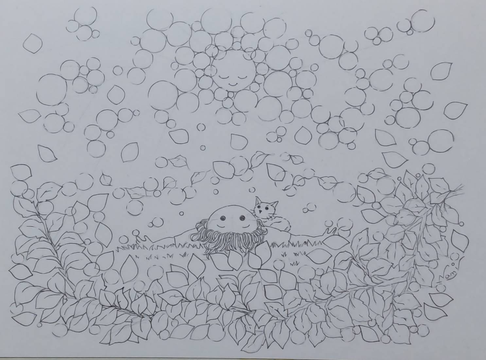
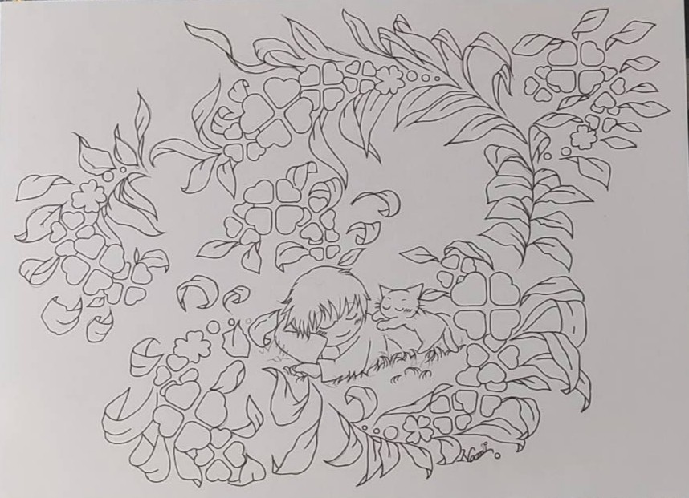
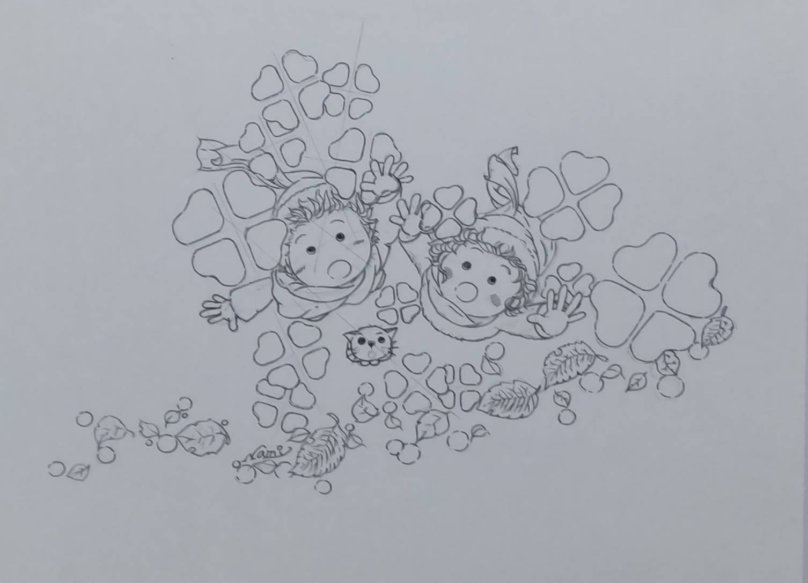
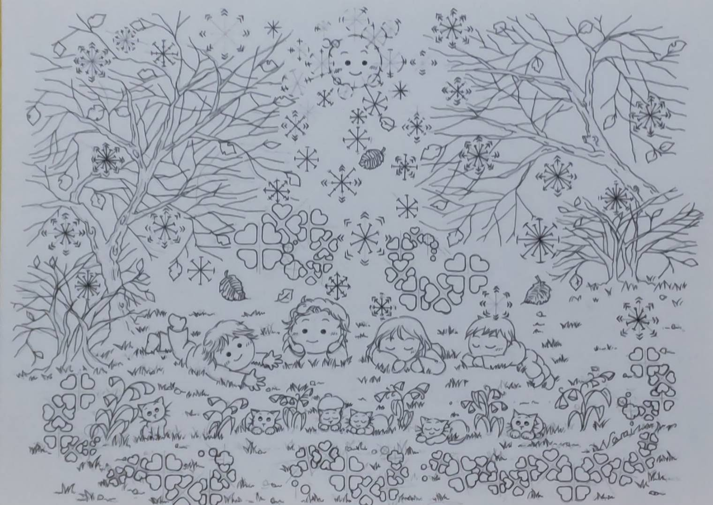
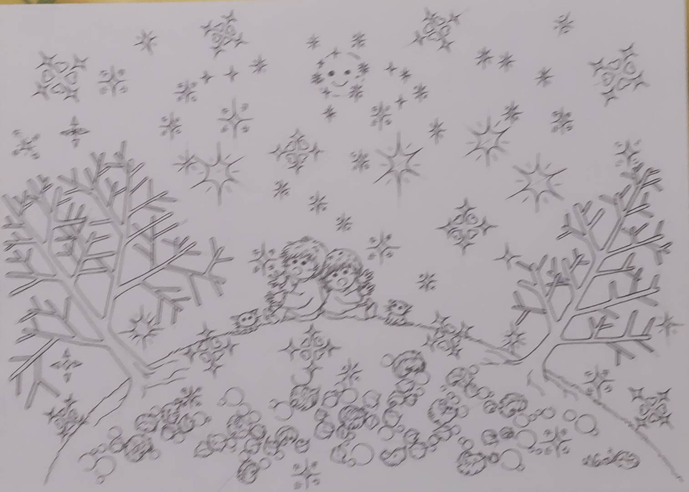
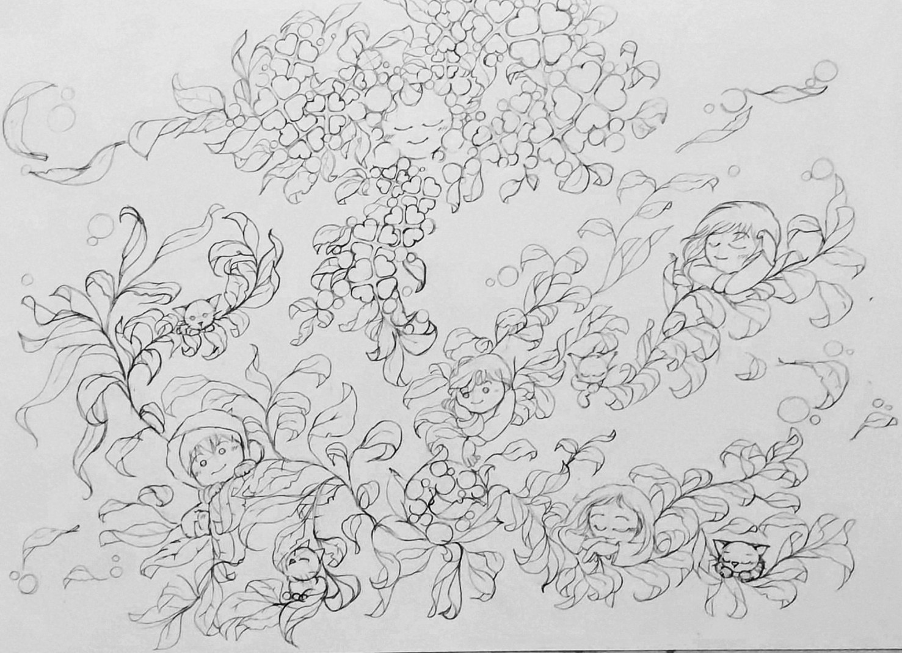

In the Quiet
静けさの中で
0㎝の美術館
Welcome to the World of Line Art

In the Quiet
静けさの中で

Before Sleep
眠りのまえ

Beyond the White
白の向こうへ

A Little Clearing
小さな晴れ間

Where the Eyes Rest
見つめる先に

Kindness on a Cloudy Day
くもりの日の優しさ